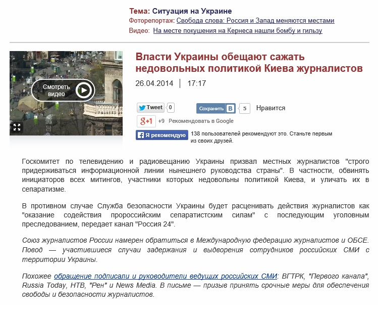
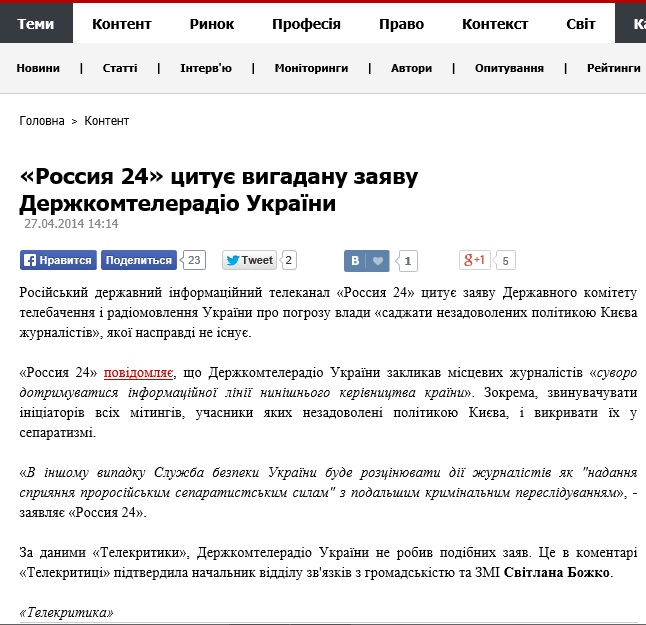

Телеканал Россия 24 процитировал несуществующее заявление Госкомтелерадио Украины
Телеканал
Россия 24 26 апреля 2014 года показал сюжет, согласно которому Госкомитет по телевидению и радиовещанию Украины якобы призвал местных журналистов «строго придерживаться информационной линии нынешнего руководства страны».В частности, обвинять инициаторов всех митингов, участники которых недовольны политикой Киева, и уличать их в сепаратизме.
https://www.youtube.com/watch?v=wNzfi62N6EA
В противном случае, по данным канала
Россия 24 , Служба безопасности Украины будет расценивать действия журналистов как «оказание содействия пророссийским сепаратистским силам» с последующим уголовным преследованием.
Однако заявления, которое дважды цитирует ведущая новостей канала
Россия 24 не существует.Его нет на сайте Госкомтелерадио, о нем не знают украинские журналисты.
Более того, начальник отдела по связям с общественностью и СМИ Госкомтелерадио в комментарии «Телекритике» официально опровергла существование такого заявления.
По материалам: Телекритика.
Posted On: 2014-04-27T21:00:00


Content Date: 2014-04-27
Download Date: 2021-07-16
Document ID: L0C04FB7A